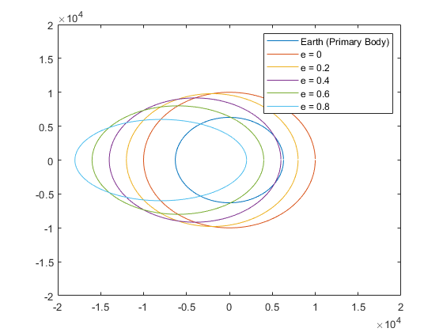
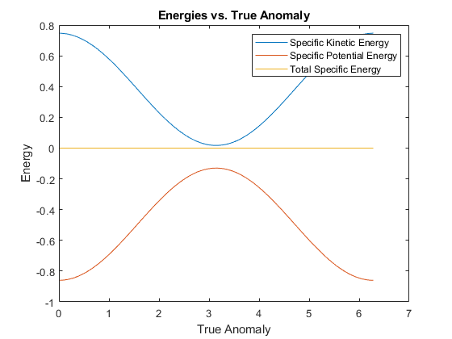

Contents
fig = 0;
Question 4
a = 10000;
e = [0 0.2 0.4 0.6 0.8];
ta = [1:360]*(pi/180);
re = 6300;
xe = re.*cos(ta);
ye = re.*sin(ta);
r = a*(1-e(1)^2)./(1+e(1)*cos(ta));
x = r.*cos(ta);
y = r.*sin(ta);
r = a*(1-e(2)^2)./(1+e(2)*cos(ta));
x1 = r.*cos(ta);
y1 = r.*sin(ta);
r = a*(1-e(3)^2)./(1+e(3)*cos(ta));
x2 = r.*cos(ta);
y2 = r.*sin(ta);
r = a*(1-e(4)^2)./(1+e(4)*cos(ta));
x3 = r.*cos(ta);
y3 = r.*sin(ta);
r = a*(1-e(5)^2)./(1+e(5)*cos(ta));
x4 = r.*cos(ta);
y4 = r.*sin(ta);
fig = 1;
figure(fig);
plot(xe,ye)
hold on
plot(x,y)
plot(x1,y1)
plot(x2,y2)
plot(x3,y3)
plot(x4,y4)
legend({'Earth (Primary Body)','e = 0','e = 0.2','e = 0.4','e = 0.6','e = 0.8'})
axis([-20000 20000 -20000 20000])

Question 5.9
clc
clear all
r = [0.90000 -0.80000 1.10000];
v = [0 1.00000 0];
mu = 1;
h = cross(r,v);
X = [' 5.1: h = ' num2str(h)];
disp(X);
orbitenergy = .5*(v*v') - mu/(sqrt(r*r'));
X = [' 5.2: Energy = ' num2str(orbitenergy)];
disp(X);
ev = mu*(cross(v,h)) - r/(sqrt(r*r'));
X = [' 5.3: Eccentricity Vector = ' num2str(ev)];
disp(X);
truea = acos((dot(r,ev))/(sqrt(r*r')*sqrt(ev*ev')));
truea = rad2deg(truea);
X = [' 5.4: True Anomoly (Degrees) = +/-' num2str(truea)];
disp(X);
e = sqrt(ev*ev');
X = [' 5.5: Eccentricity = ' num2str(e)];
disp(X);
p = (h*h')/mu;
a = p/(1-e^2);
X = [' 5.6: Semimajor Axis = ' num2str(a)];
disp(X);
rp = p/(1+e);
X = [' 5.7: Periapsis = ' num2str(rp)];
disp(X);
ra = p/(1-e);
X = [' 5.8: Apoapsis = ' num2str(ra)];
disp(X);
5.1: h = -1.1 0 0.9
5.2: Energy = -0.11314
5.3: Eccentricity Vector = 0.34817 0.49051 0.42555
5.4: True Anomoly (Degrees) = +/-71.1107
5.5: Eccentricity = 0.73683
5.6: Semimajor Axis = 4.4193
5.7: Periapsis = 1.163
5.8: Apoapsis = 7.6756
Question 6
clc
clear all
r = [0.90000 -0.80000 1.10000];
v = [0 1.00000 0];
mu = 1;
magv = sqrt(v*v');
h = cross(r,v);
magh = sqrt(h*h');
p = (magh^2)/mu;
ev = mu*(cross(v,h)) - r/(sqrt(r*r'));
e = sqrt(ev*ev');
a = p/(1-e^2);
ta = [1:360]*(pi/180);
magr = p./(1+e.*cos(ta));
v = sqrt(mu.*((2./magr)-(1/a)));
ske = (v.^2)./2;
spe = -mu./magr;
energy0 = (v(360)^2)/2 - mu/magr(360);
tse = (ske + spe) - energy0;
fig = 2;
figure(fig);
plot(ta,ske)
hold on
plot(ta,spe)
plot(ta,tse)
xlabel('True Anomaly')
ylabel('Energy')
title('Energies vs. True Anomaly')
legend({'Specific Kinetic Energy','Specific Potential Energy', 'Total Specific Energy'})
